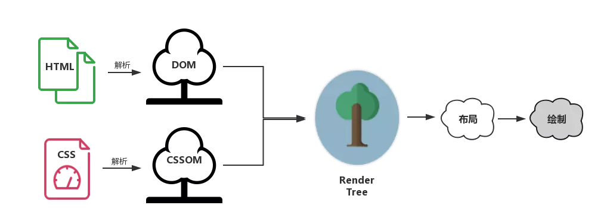

<!DOCTYPE html>
<html>
<head><meta name="generator" content="Hexo 3.8.0">
  <meta charset="utf-8">
  
  <title>Tip. 为什么我们推荐style放在head中，而script放在body尾? | 周宇涛的网络日志</title>
  <meta name="viewport" content="width=device-width, initial-scale=1, maximum-scale=1">
  <meta name="description" content="经常看到网上关于性能优化提到应该把样式style放到head中，把脚本script放到body中。 反正也不知道为什么，当别人问起，也就这么回答。 今天让我们看看背后的原理是什么呢?">
<meta name="keywords" content="TIP">
<meta property="og:type" content="article">
<meta property="og:title" content="Tip. 为什么我们推荐style放在head中，而script放在body尾?">
<meta property="og:url" content="https://maczyt.github.io/2019/03/20/Tip-为什么我们推荐style放在head中，而script放在body尾/index.html">
<meta property="og:site_name" content="周宇涛的网络日志">
<meta property="og:description" content="经常看到网上关于性能优化提到应该把样式style放到head中，把脚本script放到body中。 反正也不知道为什么，当别人问起，也就这么回答。 今天让我们看看背后的原理是什么呢?">
<meta property="og:locale" content="default">
<meta property="og:image" content="https://maczyt.github.io/2019/03/20/Tip-为什么我们推荐style放在head中，而script放在body尾/123.png">
<meta property="og:updated_time" content="2019-03-20T13:53:56.273Z">
<meta name="twitter:card" content="summary">
<meta name="twitter:title" content="Tip. 为什么我们推荐style放在head中，而script放在body尾?">
<meta name="twitter:description" content="经常看到网上关于性能优化提到应该把样式style放到head中，把脚本script放到body中。 反正也不知道为什么，当别人问起，也就这么回答。 今天让我们看看背后的原理是什么呢?">
<meta name="twitter:image" content="https://maczyt.github.io/2019/03/20/Tip-为什么我们推荐style放在head中，而script放在body尾/123.png">
  
    <link rel="alternate" href="/atom.xml" title="周宇涛的网络日志" type="application/atom+xml">
  
  
    <link rel="icon" href="/favicon.ico">
  
  
    
  
  <link rel="stylesheet" href="/css/style.css">
  

</head>
</html>
<body>
  <div id="container">
    <div id="wrap">
      <header id="header">
  <div id="banner"></div>
  <div id="header-outer" class="outer">
    
    <div id="header-inner" class="inner">
      <nav id="sub-nav">
        
          <a id="nav-rss-link" class="nav-icon" href="/atom.xml" title="RSS Feed"></a>
        
        <a id="nav-search-btn" class="nav-icon" title="搜索"></a>
      </nav>
      <div id="search-form-wrap">
        <form action="//google.com/search" method="get" accept-charset="UTF-8" class="search-form"><input type="search" name="q" class="search-form-input" placeholder="Search"><button type="submit" class="search-form-submit">&#xF002;</button><input type="hidden" name="sitesearch" value="https://maczyt.github.io"></form>
      </div>
      <nav id="main-nav">
        <a id="main-nav-toggle" class="nav-icon"></a>
        
          <a class="main-nav-link" href="/">首页</a>
        
          <a class="main-nav-link" href="/archives">归档</a>
        
          <a class="main-nav-link" href="/about">关于</a>
        
      </nav>
      
    </div>
    <div id="header-title" class="inner">
      <h1 id="logo-wrap">
        <a href="/" id="logo">周宇涛的网络日志</a>
      </h1>
      
    </div>
  </div>
</header>
      <div class="outer">
        <section id="main"><article id="post-Tip-为什么我们推荐style放在head中，而script放在body尾" class="article article-type-post" itemscope="" itemprop="blogPost">
  <div class="article-meta">
    <a href="/2019/03/20/Tip-为什么我们推荐style放在head中，而script放在body尾/" class="article-date">
  <time datetime="2019-03-20T13:40:52.000Z" itemprop="datePublished">2019-03-20</time>
</a>
    
  </div>
  <div class="article-inner">
    
    
      <header class="article-header">
        
  
    <h1 class="article-title" itemprop="name">
      Tip. 为什么我们推荐style放在head中，而script放在body尾?
    </h1>
  

      </header>
    
    <div class="article-entry" itemprop="articleBody">
      
        <!-- Table of Contents -->
        
        <p>经常看到网上关于性能优化提到应该把样式<sup>style</sup>放到<code>head</code>中，把脚本<sup>script</sup>放到<code>body</code>中。</p>
<p>反正也不知道为什么，当别人问起，也就这么回答。</p>
<p>今天让我们看看背后的原理是什么呢?</p>
<a id="more"></a>
<p>让我偷一张来自大神小册的图。</p>
<p></p>
<ul>
<li>解析 DOM 和解析 CSSOM 的过程是<strong>并行的</strong></li>
<li>浏览器处理的是布局渲染树，也就是 DOM 和 CSSOM 结合后的。</li>
<li>浏览器在构建 CSSOM 的过程中，<strong>不会渲染任何已处理的内容</strong>，所以我们需要尽早的加载样式，以便缩短首次渲染时间。</li>
<li>当解析到 JS 时，浏览器渲染会把控制权交给 JS 引擎，这个时候会阻塞 DOM 渲染。所以应该尽晚的加载脚本。</li>
<li>😳</li>
</ul>

      
    </div>
    <footer class="article-footer">
      <a data-url="https://maczyt.github.io/2019/03/20/Tip-为什么我们推荐style放在head中，而script放在body尾/" data-id="cjxsn8u600000q8vvnhj1pte5" class="article-share-link">分享</a>
      
      
      
  <ul class="article-tag-list"><li class="article-tag-list-item"><a class="article-tag-list-link" href="/tags/TIP/">TIP</a></li></ul>

    </footer>
  </div>
  
    
 <script src="/jquery/jquery.min.js"></script>
  <div id="random_posts">
    <h2>推荐文章</h2>
    <div class="random_posts_ul">
      <script>
          var random_count =4
          var site = {BASE_URI:'/'};
          function load_random_posts(obj) {
              var arr=site.posts;
              if (!obj) return;
              // var count = $(obj).attr('data-count') || 6;
              for (var i, tmp, n = arr.length; n; i = Math.floor(Math.random() * n), tmp = arr[--n], arr[n] = arr[i], arr[i] = tmp);
              arr = arr.slice(0, random_count);
              var html = '<ul>';
            
              for(var j=0;j<arr.length;j++){
                var item=arr[j];
                html += '<li><strong>' + 
                item.date + ':&nbsp;&nbsp;<a href="' + (site.BASE_URI+item.uri) + '">' + 
                (item.title || item.uri) + '</a></strong>';
                if(item.excerpt){
                  html +='<div class="post-excerpt">'+item.excerpt+'</div>';
                }
                html +='</li>';
                
              }
              $(obj).html(html + '</ul>');
          }
          $('.random_posts_ul').each(function () {
              var c = this;
              if (!site.posts || !site.posts.length){
                  $.getJSON(site.BASE_URI + 'js/posts.js',function(json){site.posts = json;load_random_posts(c)});
              } 
               else{
                load_random_posts(c);
              }
          });
      </script>
    </div>
  </div>

    
<nav id="article-nav">
  
    <a href="/2019/03/21/转-学习正则表达式/" id="article-nav-newer" class="article-nav-link-wrap">
      <strong class="article-nav-caption">上一篇</strong>
      <div class="article-nav-title">
        
          [转] 学习正则表达式
        
      </div>
    </a>
  
  
    <a href="/2019/03/10/如何动手创建一个简单的MVVM框架/" id="article-nav-older" class="article-nav-link-wrap">
      <strong class="article-nav-caption">下一篇</strong>
      <div class="article-nav-title">如何动手创建一个简单的MVVM框架</div>
    </a>
  
</nav>

  
</article>
 
     
  <div class="comments" id="comments">
    
     
       
      <div id="cloud-tie-wrapper" class="cloud-tie-wrapper"></div>
    
       
      
      
           <div id="gitment_comments"></div>
    
  </div>
 
  

</section>
           
    <aside id="sidebar">
  
    

  
    
  
    

  
    
  
    
  <div class="widget-wrap">
    <h3 class="widget-title recent-posts">最新文章</h3>
    <div class="widget">
      <ul>
        
          <li>
            <a href="/2019/07/07/Cetos7安装nginx三两事/">Cetos7安装nginx三两事</a>
          </li>
        
          <li>
            <a href="/2019/07/05/阿里云Cetos安装Mysql/">阿里云Cetos安装Mysql</a>
          </li>
        
          <li>
            <a href="/2019/03/21/转-学习正则表达式/">[转] 学习正则表达式</a>
          </li>
        
          <li>
            <a href="/2019/03/20/Tip-为什么我们推荐style放在head中，而script放在body尾/">Tip. 为什么我们推荐style放在head中，而script放在body尾?</a>
          </li>
        
          <li>
            <a href="/2019/03/10/如何动手创建一个简单的MVVM框架/">如何动手创建一个简单的MVVM框架</a>
          </li>
        
      </ul>
    </div>
  </div>

  
    

  
    
  
    <!--微信公众号二维码-->


  
</aside>

      </div>
      <footer id="footer">
  
  <div class="outer">
    <div id="footer-left">
      &copy; 2014 - 2019 maczyt&nbsp;|&nbsp;
      主题 <a href="https://github.com/giscafer/hexo-theme-cafe/" target="_blank">Cafe</a>
    </div>
     <div id="footer-right">
      联系方式&nbsp;|&nbsp;369280416@qq.com
    </div>
  </div>
</footer>
 <script src="/jquery/jquery.min.js"></script>
    </div>
    <nav id="mobile-nav">
  
    <a href="/" class="mobile-nav-link">首页</a>
  
    <a href="/archives" class="mobile-nav-link">归档</a>
  
    <a href="/about" class="mobile-nav-link">关于</a>
  
</nav>
    
<script>
// Elevator script included on the page, already.
window.onload = function() {
  var elevator = new Elevator({
    selector:'.back-to-top-btn',
    element: document.querySelector('.back-to-top-btn'),
    duration: 1000 // milliseconds
  });
}
</script>
      

  
    <script>
      var cloudTieConfig = {
        url: document.location.href, 
        sourceId: "",
        productKey: "e2fb4051c49842688ce669e634bc983f",
        target: "cloud-tie-wrapper"
      };
    </script>
    <script src="https://img1.ws.126.net/f2e/tie/yun/sdk/loader.js"></script>
    

  


<!-- author:forvoid begin -->
<!-- author:forvoid begin -->

  <link rel="stylesheet" href="https://imsun.github.io/gitment/style/default.css">
  <script src="https://imsun.github.io/gitment/dist/gitment.browser.js"></script> 
  <script>
  var gitment = new Gitment({
    // id: '页面 ID', // 可选。默认为 location.href
    owner: 'maczyt',
    repo: 'maczyt.github.io',
    oauth: {
    client_id: 'ec909c607ca0603ee69f',
    client_secret: '611d57c463dd5cbcef431a48c0ff777679387238',
    }
  })
  gitment.render(document.getElementById("gitment_comments"))
</script>


<!-- author:forvoid end -->

<!-- author:forvoid end -->


  
    <script type="text/x-mathjax-config">
      MathJax.Hub.Config({
        tex2jax: {
          inlineMath: [ ['$','$'], ["\\(","\\)"]  ],
          processEscapes: true,
          skipTags: ['script', 'noscript', 'style', 'textarea', 'pre', 'code']
        }
      })
    </script>

    <script type="text/x-mathjax-config">
      MathJax.Hub.Queue(function() {
        var all = MathJax.Hub.getAllJax(), i;
        for (i=0; i < all.length; i += 1) {
          all[i].SourceElement().parentNode.className += ' has-jax';
        }
      })
    </script>
    <script type="text/javascript" src="https://cdn.rawgit.com/mathjax/MathJax/2.7.1/MathJax.js?config=TeX-AMS-MML_HTMLorMML"></script>
  


 <script src="/js/is.js"></script>


  <link rel="stylesheet" href="/fancybox/jquery.fancybox.css">
  <script src="/fancybox/jquery.fancybox.pack.js"></script>


<script src="/js/script.js"></script>
<script src="/js/elevator.js"></script>
  </div>
</body>
</html>